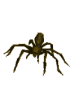
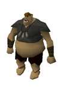

")
Feldip Hills (Members)
Introduction

The Feldip Hills is a fairly massive tract of land, extending to the west beyond Jiggig, to the north up to the southern border of Kandarin, and south to the edge of the Hunter area. Because of its size, and the fact that ogres require vast resources to feed themselves, the Feldip Hills are sparsely populated, especially in the west.
Location

Despite its relative isolation, the gnomes have elected to send a glider there, but it will need to have its runway repaired before anyone can use it.Those who have completed A Fairy Tale Part II will also have access to the fairy ring.
South of the Hills is a dense jungle filled with exotic creatures. In recent times Hunters have started to arrive, and now the jungle is known as the Feldip Hunter Area.
Points of Interest

One of the finest features of the Feldip Hills must surely be the chompies and jubblies. These massive birds flap about far above the land, vaguely aware that the ogres below find them more than a little bit delicious. Luckily for them, there are very few ogres that have learnt how to coax them down within bowshot.
For those with a taste for smaller, tastier food, the Feldip Hunter Area to the south of the Hills is alive with the movements of creatures that take a bit more skill to trap and kill. Adventurers eager to catch chinchompas, kebbits, black warlocks and so on may well find their way to this area.
Rangers who have agreed to face the horror of the Zogre Flesh Eaters will find the caves of Jiggig to be an excellent training ground. It is also a good source of bones for some high-level Prayer training.
Personalities
![[image]](../../img/main/kbase/npc/area_guides/chathead/rantz1.gif) It's been said that ogres are more cunning and inventive than trolls, and few ogres exhibit this as impressively as Rantz. Though he speaks in a primitive fashion - even by ogre standards - he has mastered the art of hunting chompies and jubblies. Of course, he'd prefer not to do it himself, so wandering adventurers are always welcome near his cave.
|
| Rantz can be found south of his home in the east of the Feldip Hills. |
Quests
You may start the following quest in the Feldip Hills:
Zogre Flesh Eaters (Members)
Big Chompy Bird Hunting (Members)
The Wild Hills
|

Though technically the same breed as the spiders that lurk behind Duke Horacio's castle in Lumbridge, these spiders are far stronger and nastier than any of them. Still, the Feldip Hills are a less forgiving place, so the giant spiders are the least of your worries.
|

Ogres are generally not very aggressive creatures, but this is no guarantee that they will not attack if provoked. Generally, ogres like a good scrap, and humans trying to talk to them is all the excuse they need.
|
|
| Giant spiders can be found in the north-west, near the southern edge of Gu'Tanoth. | Ogres can be found in a variety of places around the Feldip Hills. |
![[image]](../../img/main/kbase/npc/area_guides/dire_wolf.gif) The wolves of the Feldip Hills are notoriously violent, and will attack anybody that comes within range of their drooling jaws. Most adventurers get used to this quickly, and either run past or avoid them altogether.
|
![[image]](../../img/main/kbase/npc/area_guides/ogress.gif) These ogresses have wandered from the camp of Oo'glog to pursue their many different hobbies. Often this can be by hunting, much like their Chief Tess; practising shamanism, like Seegud; or impaling things with spears, like Chargurr. The majority of ogresses go for the latter.
|
|
| Wolves can be found in packs, often near the swampy pools of water. | Ogresses wander about the multi-way combat area to the west of the Hunter area. |
![[image]](../../img/main/kbase/npc/area_guides/ogre_chieftain1.gif) The chieftains may not be the largest of the ogres, but they must surely be among the ugliest. They have risen to the tops of their tribes through a combination of strength and physical impressiveness, and now increase this with the addition of blue warpaint.
|
![[image]](../../img/main/kbase/npc/area_guides/ogress_warrior.gif) The ogress warriors are a hefty bunch, who like nothing better than to run humans through with spears. Next on the list is running wolves through with spears. Then it is running giant spiders through with spears. The list could go on.
|
|
| Chieftains can be found near clusters of ogres. | Ogress warriors wander about the multi-way combat area to the west of the Hunter area. |
![[image]](../../img/main/kbase/npc/area_guides/ogress_champion.gif) One of the following statements is true: Ogress champions prefer the artistry and ballet-like dance of close-combat fighting, so adopt the club; Ogress champions prefer the look on people's faces as the club smashes it, so adopt the club.
|
| Ogress champions wander about the multi-way combat area to the west of the Hunter area. |
Miscellaneous
- If you're looking for a challenge after you've finished Big Chompy Bird Hunting, you might like to spend a while catching more of them. Rantz rather likes chompy and jubbly hunting, and keeps a selection of fetching hats for skilled chompy hunters.
- If you need a little help with your Hunter skill, there is a Hunter Expert in a hidden shack in the Feldip Hunter Area.
- Slayers tasked with killing jungle strykewyrms will find them on the coast just north-west of the entrance to Oo'glog, south of the Feldip Hills.

More articles in
Other
|
|